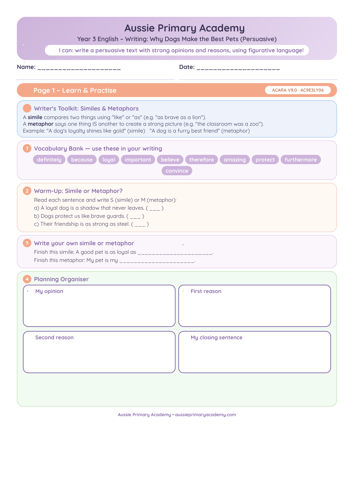

Year 3 · English · Writing · Free Printable
Persuasive Writing – Why Dogs Make the Best Pets
Help Year 3 students write a persuasive text arguing that dogs make the best pets, using reasons and evidence.
Worksheet Preview

Learning Intention
Students will write a persuasive text with a clear opinion, supporting reasons and a concluding statement.
Curriculum alignment
AC9E3LY06
Australian Curriculum Version 9.0 support for this Year 3 English skill.
Teacher Notes
Teach the structure: opinion → reasons with examples → conclusion. Use persuasive words such as should, must, best, important.
Skills Practised
- Stating an opinion
- Giving reasons
- Persuasive language
- Text structure
Resource Details
Year level: Year 3
Subject: English
Topic / skill: Plan and create persuasive writing for a familiar audience using appropriate structure and language features.
Curriculum alignment: AC9E3LY06
Curriculum version: Australian Curriculum Version 9.0
Format: Free printable worksheet